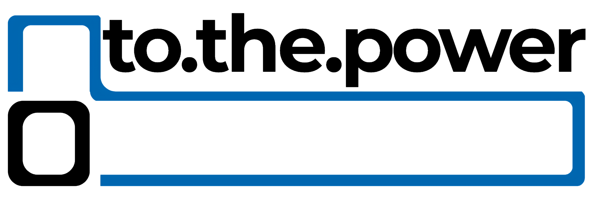

Meine Arbeiten & Projekte
Eine Auswahl von Websites, Konzepten und Designs, an denen ich gearbeitet habe.
wood4home.at ↗
WebsiteEin klares, modernes Single-Page-Design mit Fokus auf Ästhetik, intuitive Nutzerführung und erstklassige Performance auf allen Geräten.
to.the.power
Logo & Branding
Eindringlich und feinfühlig zugleich – ein minimalistisches Logo- und Identitätskonzept.
Hexcat Homepage
EigenprojektDiese persönliche Plattform: Statisch aufgebaut, extrem leichtgewichtig, responsive und optimiert für Nginx-Hosting ganz ohne unnötigen Framework-Ballast.